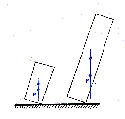
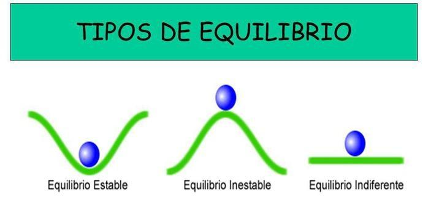

Concepto de estabilidad
Es la capacidad de un sistema (cuerpo humano, objeto, formulación) de mantener su posición, forma o propiedades físicas frente a perturbaciones externas


Tipos de equilibrio
El equilibrio puede ser estable, inestable o indiferente. En el equilibrio estable, el cuerpo tiende a recuperar su posición original tras una perturbación.
Ejemplo práctico
Consulta más sobre la estabilidad.